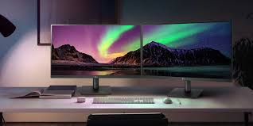
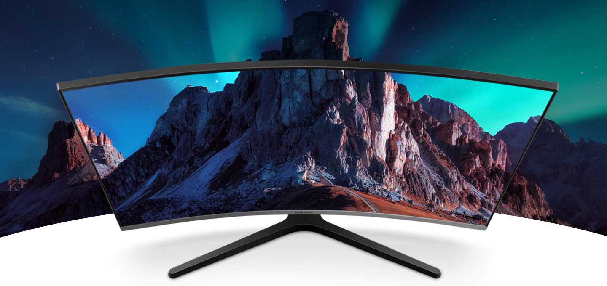
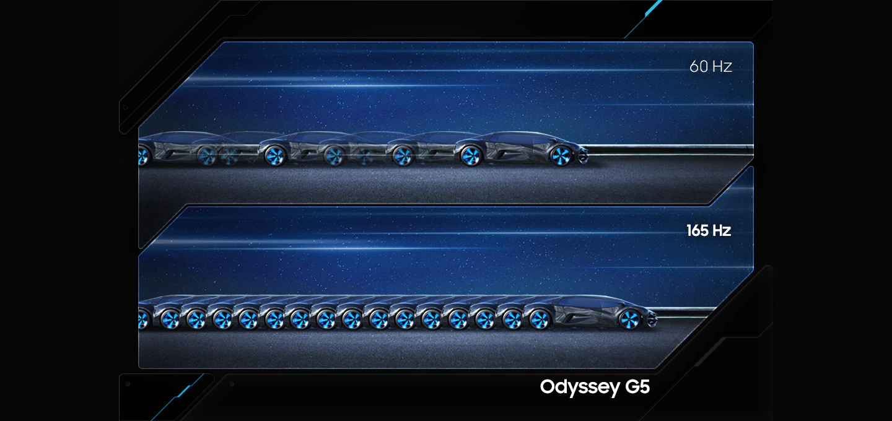

RGX 11Z PRO GAMING MONITER
현실 그 이상의 리얼리티
현실보다 더욱 생생한 게임 속으로 빠져보세요. FHD보다 약 1.7 배 많은 픽셀의 QHD 화면이 이전과는 다른 게임을 보여줍니다. 선명한 컬러와 178˚ 시야각의 VA 패널 또한 콘텐츠의 퀄리티를 한층 업그레이드하죠.

눈을 사로잡는 아름다운 곡선
게임도 업무도 더욱 집중할 수 있습니다. 1500 R의 이상적인 곡률의 화면이 몰입도를 높여주죠. 오래 보아도 눈의 피로가 덜해 편안하게 즐길 수 있습니다.

최고의 게이밍을 위한 최적의 주사율
165 Hz 주사율은 이미지 잔상과 흐려지는 현상을 현저하게 줄여 게임의 생동감을 더해줍니다. 동시 접속자가 많은 온라인 게임은 물론 최신 고사양 게임에서도 부드러운 플레이가 가능하죠.
더 알아보기